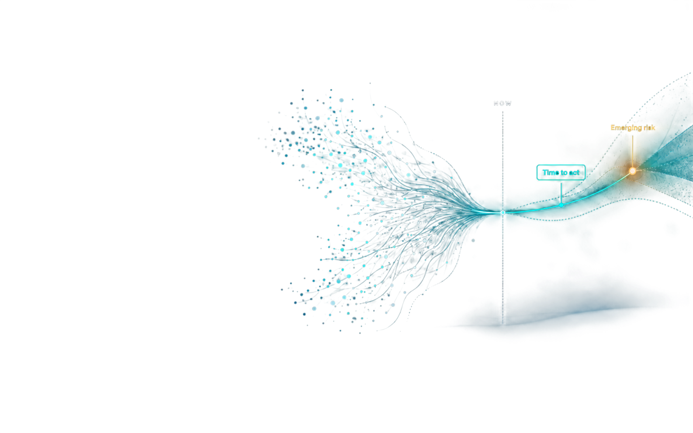

01
PREDICT
Anticipate how risk
could develop.
ASER AI turns fragmented data into forward-looking risk intelligence—helping organisations anticipate what could happen, quantify what matters and act before risk becomes loss.
See Pantheon in Action →
Early signs of risk are scattered across systems, teams and individual alerts. Without connecting them, organisations lose valuable time to intervene.
Pantheon connects fragmented data, anticipates how risk could develop and helps organisations decide where to act.
Anticipate how risk
could develop.
Quantify potential impact
and identify what needs
attention.
Act early to reduce
likelihood or
consequences.
Make informed decisions
about the exposure
that remains.
Connect operational and contextual data to understand asset behaviour, performance and emerging changes.
Assess how those changes could translate into operational disruption, safety incidents and financial exposure.
Identify developing patterns and anticipate how risk could evolve—creating earlier opportunities to intervene.
Pan theon complements existing BMS, EMS and SCADA systems, connecting asset signals with forward-looking insight into degradation, abnormal behaviour and developing risk.
Prioritise interventions and protect performance throughout the asset’s remaining useful life.
Support risk assessment, loss prevention and better-informed insurance decisions.